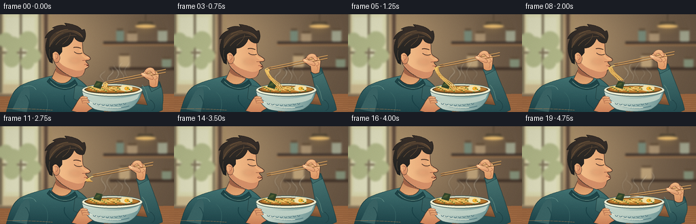
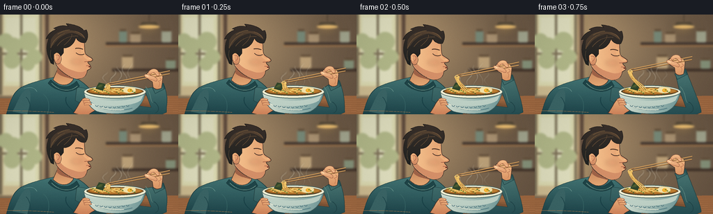

CODING AGENTS AS PIXEL WORLD MODELS
traex/GPT-6.1-Sol · motion_rationality_0000
点击播放 · 原生 RGB 像素
逐轮保存的候选
回放视频、检查图与代码变化。
每份候选均可单独播放。实际图片检查记录在下方工具轨迹中。
候选 01播放与检查图
点击播放 · 原生 RGB 像素


展开代码变化
--- 上一保存版本
+++ 本次保存版本
@@ -0,0 +1,311 @@
+from pathlib import Path
+import math
+import numpy as np
+from PIL import Image, ImageDraw, ImageFilter
+import artifact_io
+
+ROOT=Path(__file__).resolve().parent
+W,H,S=256,144,4
+SZ=(W*S,H*S)
+
+def bezier(p, n=32):
+ p=np.array(p,float)
+ if len(p)==4:
+ t=np.linspace(0,1,n)[:,None]
+ return ((1-t)**3*p[0]+3*(1-t)**2*t*p[1]+3*(1-t)*t*t*p[2]+t**3*p[3]).tolist()
+ return p.tolist()
+
+def path(cmds, trans=None):
+ pts=[]; start=None; prev=None
+ for c in cmds:
+ if c[0]=='M': prev=c[1:]; start=prev; pts.append(prev)
+ elif c[0]=='L': prev=c[1:]; pts.append(prev)
+ elif c[0]=='C':
+ q=bezier([prev,c[1:3],c[3:5],c[5:7]])
+ pts.extend(q[1:]); prev=c[5:7]
+ elif c[0]=='Q':
+ a=np.array(prev); b=np.array(c[1:3]); z=np.array(c[3:5])
+ pts.extend(bezier([a,a+2/3*(b-a),z+2/3*(b-z),z])[1:]);prev=c[3:5]
+ elif c[0]=='Z': pts.append(start)
+ return [trans(*p) if trans else p for p in pts]
+
+def poly(im,pts,fill,outline=None,width=.7):
+ d=ImageDraw.Draw(im); ps=[(round(x*S),round(y*S)) for x,y in pts]
+ d.polygon(ps,fill=fill)
+ if outline:d.line(ps+[ps[0]],fill=outline,width=max(1,round(width*S)),joint='curve')
+
+def line(im,pts,color,width=1):
+ ImageDraw.Draw(im).line([(round(x*S),round(y*S)) for x,y in pts],fill=color,width=max(1,round(width*S)),joint='curve')
+
+def curve(im,points,color,width=1,trans=None):
+ ps=bezier(points)
+ if trans:ps=[trans(*p) for p in ps]
+ line(im,ps,color,width)
+
+def shape(im,cmds,fill,outline=None,width=.7,trans=None):
+ poly(im,path(cmds,trans),fill,outline,width)
+
+def ellipse(im,box,color,outline=None,width=1):
+ ImageDraw.Draw(im).ellipse(tuple(round(v*S) for v in box),fill=color,outline=outline,width=max(1,round(width*S)))
+
+def grad_shape(im,cmds,top,bottom,outline=None,width=.7,trans=None,horizontal=False):
+ pts=path(cmds,trans)
+ mask=Image.new('L',SZ); poly(mask,pts,255)
+ ar=np.asarray(mask)
+ ys,xs=np.where(ar>0)
+ if not len(ys):return
+ v=np.arange(SZ[0] if horizontal else SZ[1],dtype=np.float32)
+ lo,hi=(xs.min(),xs.max()) if horizontal else (ys.min(),ys.max())
+ u=np.clip((v-lo)/max(1,hi-lo),0,1)
+ colors=(np.array(top)[None,:]*(1-u[:,None])+np.array(bottom)[None,:]*u[:,None]).astype(np.uint8)
+ rgb=np.broadcast_to(colors[None,:,:] if horizontal else colors[:,None,:],(SZ[1],SZ[0],3))
+ im.paste(Image.fromarray(rgb), (0,0),mask)
+ if outline:line(im,pts+[pts[0]],outline,width)
+
+
+def background():
+ yy,xx=np.mgrid[:H*S,:W*S]/S
+ light=np.exp(-((xx-48)**2/17000+(yy-37)**2/10000))
+ base=np.zeros((H*S,W*S,3));base[:]=(100,82,65)
+ base+=light[:,:,None]*np.array([76,66,45])
+ im=Image.fromarray(np.uint8(np.clip(base,0,255)))
+ # Luminous café window, softly out of focus.
+ d=ImageDraw.Draw(im)
+ d.rectangle((0,0,61*S,117*S),fill=(206,188,145))
+ d.rectangle((5*S,0,56*S,103*S),fill=(219,217,176))
+ d.rectangle((8*S,4*S,51*S,97*S),fill=(224,223,191))
+ for x in [0,29,57]:d.rectangle((x*S,0,(x+3)*S,116*S),fill=(119,108,84))
+ d.rectangle((0,55*S,61*S,58*S),fill=(126,114,87))
+ # green foliage visible beyond the glass
+ for x,y,r in [(8,38,11),(19,45,12),(41,39,14),(49,61,11),(17,66,12),(40,71,10)]:
+ ellipse(im,(x-r,y-r,x+r,y+r),(178,184,137))
+ d.rectangle((65*S,0,70*S,118*S),fill=(92,73,60))
+ d.rectangle((73*S,0,76*S,117*S),fill=(165,140,101))
+ # Shelves and ceramic jars.
+ d.rectangle((152*S,40*S,256*S,44*S),fill=(66,55,48))
+ d.rectangle((151*S,44*S,256*S,46*S),fill=(159,117,76))
+ d.rectangle((161*S,78*S,256*S,82*S),fill=(65,51,41))
+ for x,y,w,h,c in [(171,23,11,17,(118,135,118)),(187,27,15,13,(169,145,113)),(232,23,14,17,(162,165,142)),(175,60,16,18,(186,159,119)),(238,65,14,13,(132,144,120))]:
+ d.rounded_rectangle((x*S,y*S,(x+w)*S,(y+h)*S),radius=2*S,fill=c)
+ d.rectangle(((x+1)*S,(y-2)*S,(x+w-1)*S,(y+1)*S),fill=(98,78,57))
+ # Pendant lamp and pooled golden light.
+ d.line((214*S,0,214*S,10*S),fill=(70,58,48),width=S)
+ poly(im,[(204,11),(224,11),(229,18),(199,18)],(75,66,54))
+ ellipse(im,(199,15,229,20),(243,196,119))
+ gl=Image.new('RGBA',SZ)
+ ellipse(gl,(195,10,233,29),(255,200,99,48))
+ gl=gl.filter(ImageFilter.GaussianBlur(7*S));im=Image.alpha_composite(im.convert('RGBA'),gl).convert('RGB')
+ im=im.filter(ImageFilter.GaussianBlur(1.45*S))
+ # Wooden counter, just a narrow foreground band.
+ shape(im,[('M',0,121),('L',256,117),('L',256,144),('L',0,144),('Z',)],(157,103,64))
+ for j in range(7):
+ curve(im,[(0,125+j*3.2),(70,124+j*3.2),(178,125+j*2.6),(256,122+j*3.0)],(172+j*2,118+j,75+j),.5)
+ return im
+
+BG=background()
+OUT=(66,48,40)
+
+def smooth(x):
+ x=max(0,min(1,x));return x*x*(3-2*x)
+
+def render(i):
+ t=i/4
+ lift=smooth(i/4)
+ eat=smooth((i-4)/9)
+ retreat=smooth((i-16)/3)
+ bob=2.1*math.sin(math.pi*min(i,14)/14) + .4*math.sin(t*2.2)
+ turn=.012*math.sin(math.pi*min(i,14)/14)
+ def head(x,y):
+ x0=x-102;y0=y-61
+ return (102+x0*math.cos(turn)-y0*math.sin(turn)+.5*math.sin(t*1.2),61+x0*math.sin(turn)+y0*math.cos(turn)+bob)
+ mouth=np.array(head(129.5,75.3))
+ if i<=4:
+ tip=np.array([155*(1-lift)+(mouth[0]+4)*lift,101*(1-lift)+(mouth[1]-.4)*lift])
+ elif i<=16:
+ tip=mouth+np.array([4.6+2.8*eat,-1.3-3*eat])
+ else:
+ tip=(mouth+np.array([7.4,-4.3]))*(1-retreat)+np.array([159,102])*retreat
+ ang=-.205+.055*retreat
+ direction=np.array([math.cos(ang),math.sin(ang)])
+ grip=tip+direction*64
+ gx,gy=grip
+ im=BG.copy()
+ # Soft cast shadow on the tabletop.
+ sh=Image.new('RGBA',SZ);ellipse(sh,(94,126,227,144),(52,35,25,94));sh=sh.filter(ImageFilter.GaussianBlur(3*S))
+ im=Image.alpha_composite(im.convert('RGBA'),sh).convert('RGB')
+ # Torso: deep jade cotton, seam, folds, and collar.
+ torso=[('M',9,144),('C',16,119,21,108,37,102),('C',48,97,66,93,79,90),('L',105,90),('C',120,96,132,110,143,124),('L',153,144),('Z',)]
+ grad_shape(im,torso,(68,118,117),(30,69,75),(32,62,65),.8)
+ shape(im,[('M',18,140),('C',28,121,29,112,40,107),('C',45,110,45,122,39,144),('Z',)],(59,102,103))
+ curve(im,[(34,107),(44,104),(49,105),(53,111)],(100,146,139),.75)
+ curve(im,[(37,119),(42,122),(44,133),(44,142)],(31,72,77),1.1)
+ curve(im,[(62,115),(70,120),(72,132),(68,144)],(57,103,103),.7)
+ curve(im,[(95,119),(92,130),(100,133),(109,144)],(25,65,71),1.3)
+ # Arm reaches down and out to the elbow, then bends toward the chopsticks.
+ arm=[('M',110,105),('C',130,105,155,119,177,129),('L',217,134),('L',207,107),('L',gx+2,gy+17),('L',gx+17,gy+11),('C',gx+26,gy+37,238,128,239,141),('C',217,153,185,148,162,143),('C',140,138,122,132,108,124),('Z',)]
+ grad_shape(im,arm,(76,121,117),(38,79,84),(35,66,68),.8)
+ curve(im,[(221,126),(228,130),(230,139),(223,142)],(31,68,72),1)
+ curve(im,[(209,104),(218,115),(215,123),(219,127)],(99,140,130),.7)
+ cuff=[('M',gx+1,gy+18),('L',gx+16,gy+11),('L',gx+19,gy+19),('L',gx+5,gy+26),('Z',)]
+ grad_shape(im,cuff,(39,82,85),(66,111,109),(28,63,66),.7)
+ for j in range(6):line(im,[(gx+3+j*2,gy+17-j*.75),(gx+6+j*2,gy+24-j*.75)],(91,129,121),.4)
+ # Neck, under-jaw shading, collar.
+ neck=[('M',83,66),('L',105,79),('L',105,94),('C',99,103,87,105,76,94),('L',83,78),('Z',)]
+ grad_shape(im,neck,(184,117,80),(231,169,117),OUT,.7,head)
+ shape(im,[('M',82,76),('L',104,83),('L',104,93),('C',95,90,88,90,82,84),('Z',)],(159,99,72),trans=head)
+ shape(im,[('M',73,94),('C',78,100,94,112,110,96),('L',114,103),('C',100,118,78,109,69,99),('Z',)],(31,69,72),(27,60,63),.65)
+ curve(im,[(74,99),(84,110),(100,113),(111,103)],(114,152,139),.65)
+ # Face, turned three-quarter toward the bowl.
+ face=[('M',82,32),('C',94,22,112,23,119,34),('C',123,43,120,51,123,57),('C',126,60,132,62,133,65),('C',133,67,130,68,126,68),('C',126,71,130,72,130,75),('C',132,78,127,79,125,81),('C',125,88,119,93,110,93),('C',100,91,86,82,81,73),('C',74,61,73,42,82,32),('Z',)]
+ grad_shape(im,face,(250,201,147),(225,155,109),OUT,.7,head,horizontal=True)
+ # Gentle cheek and jaw planes.
+ shape(im,[('M',83,60),('C',85,75,99,79,109,82),('C',117,85,124,81,124,81),('C',124,90,118,93,110,92),('C',96,89,84,79,80,69),('Z',)],(212,143,104),trans=head)
+ shape(im,[('M',117,44),('C',123,52,119,57,124,61),('L',131,65),('L',126,66),('C',119,60,116,58,116,52),('Z',)],(238,177,124),trans=head)
+ # Blush is translucent, no hard contour.
+ blush=Image.new('RGBA',SZ)
+ cx,cy=head(110,68);ellipse(blush,(cx-9,cy-4,cx+9,cy+4),(199,99,72,36));blush=blush.filter(ImageFilter.GaussianBlur(2.5*S))
+ im=Image.alpha_composite(im.convert('RGBA'),blush).convert('RGB')
+ # Ear and its warm-lit outer rim.
+ ear=[('M',84,56),('C',77,52,74,58,78,66),('C',79,70,82,73,86,70),('C',90,65,88,59,84,56),('Z',)]
+ grad_shape(im,ear,(241,179,126),(209,137,98),OUT,.55,head)
+ curve(im,[(80,59),(86,56),(87,64),(82,66)],(175,103,80),.65,head)
+ curve(im,[(80,59),(79,61),(80,65),(81,66)],(255,205,151),.65,head)
+ # Hair silhouette and sculpted locks.
+ hair=[('M',71,65),('C',66,54,66,45,70,34),('L',66,35),('C',70,26,75,24,81,21),('L',77,20),('C',84,16,90,15,98,17),('L',95,13),('C',106,14,116,17,120,23),('L',124,22),('C',127,29,126,35,123,40),('C',117,42,111,38,109,33),('C',106,42,99,49,91,48),('L',91,55),('L',87,60),('C',85,53,80,53,77,58),('L',77,72),('L',73,70),('Z',)]
+ grad_shape(im,hair,(58,48,42),(31,34,33),(34,30,28),.8,head)
+ shape(im,[('M',73,36),('C',80,23,94,20,110,25),('C',99,26,85,30,77,43),('L',72,48),('Z',)],(73,59,46),trans=head)
+ shape(im,[('M',86,26),('C',101,20,119,23,122,35),('C',117,31,110,27,103,26),('Z',)],(83,65,49),trans=head)
+ for p,c,w in [([(73,48),(75,39),(82,31),(93,27)],(111,86,58),.75), ([(82,45),(90,34),(101,30),(112,31)],(97,75,53),.7), ([(92,44),(100,37),(104,32),(103,28)],(117,87,57),.6), ([(108,24),(116,26),(119,30),(121,33)],(140,102,66),.6), ([(73,51),(71,59),(73,62),(74,65)],(82,68,51),.65), ([(83,28),(91,23),(95,22),(100,22)],(147,113,73),.55)]:curve(im,p,c,w,head)
+ # Brow, eyelid, eyelashes, nose, lower lip.
+ curve(im,[(108,49),(112,47.7),(116,49),(119,50)],(79,54,41),1.15,head)
+ blink=.35 if i in [1,2,16] else 0
+ curve(im,[(109,55),(112,58+blink),(117,58.6+blink),(121,56.8)],(69,48,39),.95,head)
+ curve(im,[(111,58.5),(115,60),(118,60),(120,58.8)],(218,148,104),.55,head)
+ curve(im,[(121,68),(124,67.7),(126,68),(128,67.2)],(151,89,65),.65,head)
+ curve(im,[(127,62.5),(129,63),(130,63.5),(130,64)],(255,215,161),.6,head)
+ # Pursed lips receive the strands.
+ msize=.8 if i<4 else (1.2 if i<14 else .45)
+ mx,my=mouth
+ ellipse(im,(mx-2.2,my-msize,mx+.7,my+msize),(84,43,31))
+ curve(im,[head(123.7,73.8),head(125,73.5),head(128,74),head(130,74.8)],(166,94,72),.65)
+ curve(im,[head(124.8,78),head(126.3,78.4),head(128.2,77.6),head(129.6,76.7)],(252,193,143),.6)
+ if 14<=i<=17:
+ curve(im,[head(123,75),head(125,76),head(128,76),head(129,75.8)],(107,58,43),.8)
+ # Supporting left hand visible on the bowl's near-left side.
+ left=[('M',105,142),('C',112,134,114,124,121,120),('C',125,117,129,117,132,120),('L',145,124),('L',144,136),('C',132,139,127,145,124,147),('Z',)]
+ grad_shape(im,left,(240,180,126),(208,132,91),OUT,.75)
+ # Bowl ceramic body, deep rounded silhouette.
+ bowl=[('M',120,111),('C',123,124,128,135,140,140),('C',153,144,177,144,189,140),('C',201,135,207,123,209,111),('C',187,104,142,104,120,111),('Z',)]
+ grad_shape(im,bowl,(219,229,214),(113,154,154),(65,96,96),.8,horizontal=True)
+ shape(im,[('M',123,117),('C',141,127,184,127,206,116),('L',202,124),('C',183,136,141,132,127,126),('Z',)],(191,210,199))
+ curve(im,[(130,126),(142,138),(173,141),(190,135)],(84,127,134),1.2)
+ curve(im,[(132,128),(143,136),(165,139),(178,137)],(239,241,221),1.05)
+ # Minimal indigo ceramic motif.
+ for j in range(8):
+ x=139+j*6.3;y=133+2.2*math.sin(j/7*math.pi)
+ curve(im,[(x-2,y-2),(x-1,y),(x+1,y),(x+2,y-2)],(76,115,124),.7)
+ ellipse(im,(120,102,210,121),(235,235,211),(74,101,96),.9)
+ ellipse(im,(124,105,206,117),(72,66,43))
+ ellipse(im,(126,105.7,205,115.6),(154,94,36))
+ ellipse(im,(129,106,203,114.3),(190,126,49))
+ # Noodles on the broth surface, oval loops and scallion flecks.
+ for k in range(17):
+ x=134+(k*13.43)%57;y=108+(k*3.2)%5
+ curve(im,[(x-5,y),(x-4,y-3),(x+4,y-2),(x+7,y+.4)],(234,191,96),1.05)
+ curve(im,[(x-4,y-.3),(x-2,y-2),(x+2,y-1.5),(x+5,y)],(251,217,128),.45)
+ # Soft boiled egg at the far side, green garnish, nori.
+ ellipse(im,(176,104.2,195,113.5),(244,228,171),(221,188,123),.45)
+ ellipse(im,(183,106.7,190,112),(240,164,45))
+ ellipse(im,(184,107.2,189,110.9),(253,186,53))
+ poly(im,[(137,107),(142,98),(151,100),(148,110)],(49,69,42))
+ for j in range(6):line(im,[(139+j*1.2,105),(144+j*.7,101)],(85,99,52),.4)
+ for j in range(16):
+ x=132+(j*17.2)%66;y=106.9+(j*2.25)%7.2
+ ellipse(im,(x,y,x+2.4,y+1.1),(70+int(j%3)*13,113+int(j%2)*10,48))
+ curve(im,[(122,111),(138,122),(190,122),(208,111)],(251,245,214),1.5)
+ # Bowl gripping fingers belong in front of the ceramic.
+ for j in range(3):
+ yy=122+j*3.2;xx=124+j*1.3
+ finger=[('M',xx-6,yy),('C',xx-3,yy-2,xx+1,yy-1.6,xx+4,yy),('C',xx+6,yy+2,xx+3,yy+3,xx,yy+2.2),('L',xx-5,yy+2.5),('Z',)]
+ grad_shape(im,finger,(240,179,126),(216,143,98),(156,94,68),.5)
+ curve(im,[(xx+1,yy),(xx+3,yy+.2),(xx+3,yy+1.4),(xx+2,yy+1.5)],(251,205,157),.5)
+ # Steam consists of translucent continuously rising, curling wisps.
+ steam=Image.new('RGBA',SZ)
+ for j in range(5):
+ phase=(t*.21+j*.23)%1
+ base=151+j*9.3
+ height=24+17*phase
+ pts=[]
+ for q in np.linspace(0,1,55):
+ y=106-height*q
+ x=base+math.sin(q*7.8+t*1.6+j*1.7)*(2+q*2.5)+math.sin(t*.7+j)*q*3
+ pts.append((x,y))
+ # tapered opacity at the top and bottom
+ for k in range(len(pts)-1):
+ q=k/(len(pts)-1)
+ a=int(58*math.sin(math.pi*q)**.8*(.7+.3*math.sin(j+t)))
+ line(steam,[pts[k],pts[k+1]],(255,248,224,a),1.0+1.7*q)
+ diffuse=steam.filter(ImageFilter.GaussianBlur(1.4*S))
+ im=Image.alpha_composite(im.convert('RGBA'),diffuse)
+ im=Image.alpha_composite(im,steam.filter(ImageFilter.GaussianBlur(.4*S))).convert('RGB')
+ # The palm and wrist, behind the chopstick shafts.
+ def handpos(x,y):return gx+x,gy+y
+ palm=[('M',2,17),('L',1,9),('C',-4,6,-9,4,-8,-1),('C',-6,-6,-1,-6,3,-4),('C',9,-9,15,-4,16,2),('L',15,12),('L',14,18),('C',9,21,5,20,2,17),('Z',)]
+ grad_shape(im,palm,(251,195,141),(221,150,101),OUT,.7,handpos)
+ curve(im,[handpos(9,8),handpos(12,9),handpos(12,13),handpos(10,16)],(190,114,79),.55)
+ # Long, parallel wooden chopsticks: rigid tips travel with the hand.
+ for j in range(2):
+ perp=np.array([-direction[1],direction[0]])
+ start=tip+perp*(j*2.8-1.3)
+ end=tip+direction*(91-j*1.3)+perp*(j*4.1-1.3)
+ line(im,[start,end],(93,55,28),1.85)
+ line(im,[start+np.array([0,-.5]),end+np.array([0,-.5])],(216,165,99),1.05)
+ line(im,[start+direction*6,end],(242,195,124),.45)
+ # Noodles hang under gravity. During slurping, their free ends move upward into the lips.
+ if i<14:
+ if i<=4:
+ top=tip+np.array([-.8,1.2]);bottom=np.array([157.5,109.4])
+ eaten=0
+ else:
+ top=mouth+np.array([-.05,.65]);eaten=eat
+ bottom=np.array([mouth[0]+(27*(1-eat)),mouth[1]+(34*(1-eat))])
+ for k in range(5):
+ off=(k-2)*1.28
+ x0=top[0]+off;y0=top[1]
+ x1=bottom[0]+off*1.3+math.sin(t*2+k)*.65*(1-eaten);y1=bottom[1]+(k%2)*1.2*(1-eaten)
+ length=max(1,y1-y0)
+ bend=(2.7*math.sin(t*2.0+k*.7))*(1-eaten)
+ ps=bezier([(x0,y0),(x0+2+bend,y0+length*.48),(x1-6-bend,y1-length*.36),(x1,y1)],42)
+ line(im,ps,(154,91,37),1.4)
+ line(im,[(x-.2,y-.2) for x,y in ps],(248,202,101),.94)
+ line(im,[(x-.35,y-.35) for x,y in ps],(255,228,146),.33)
+ if i<=4:
+ curve(im,[(tip[0]-3,tip[1]+2),(tip[0]-3,tip[1]-2),(tip[0]+3,tip[1]-2),(tip[0]+3,tip[1]+3)],(247,209,118),1)
+ else:
+ # A short horizontal loop from the chopstick tip to the pursed mouth.
+ curve(im,[(mx,my+.3),(mx+3,my-1),(tip[0],tip[1]),(tip[0]+1,tip[1]+1)],(252,215,120),.9)
+ # Curled thumb and forefinger cover the sticks at the grip, ensuring a readable grip.
+ thumb=[('M',3,7),('C',-1,6,-5,5,-8,3),('C',-11,1,-11,-2,-8,-2),('C',-4,-2,-1,1,3,1),('L',7,4),('C',9,7,7,10,3,7),('Z',)]
+ grad_shape(im,thumb,(250,198,148),(226,155,109),(154,93,68),.6,handpos)
+ curve(im,[handpos(-8,-1),handpos(-7,0),handpos(-6,1),handpos(-5,1.5)],(255,224,174),1)
+ index=[('M',-5,-4),('C',-2,-10,4,-11,8,-8),('L',11,-3),('C',12,0,9,2,7,0),('L',4,-4),('C',1,-5,-1,-3,-2,-1),('Z',)]
+ grad_shape(im,index,(250,197,144),(222,147,101),(155,94,68),.55,handpos)
+ curve(im,[handpos(7,-3),handpos(8,-2),handpos(9,-.6),handpos(10,-1)],(253,218,168),.75)
+ curve(im,[handpos(11,3),handpos(15,5),handpos(14,7),handpos(10,8)],(176,105,76),.6)
+ # Soft foreground highlight on the table.
+ curve(im,[(1,139),(32,138),(58,140),(77,141)],(186,130,80),.5)
+ # Supersampled illustration, with a restrained analog grain.
+ im=im.resize((W,H),Image.Resampling.LANCZOS)
+ a=np.asarray(im).astype(np.float32)
+ rng=np.random.default_rng(40)
+ grain=rng.normal(0,.55,(H,W,1))
+ # Gentle vignette keeps the face and steaming bowl in focus.
+ y,x=np.mgrid[:H,:W]
+ vign=1-.075*((x-137)**2/(155**2)+(y-79)**2/(122**2))
+ a=a*vign[:,:,None]+grain
+ return np.uint8(np.clip(a,0,255))
+
+if __name__=='__main__':
+ frames=np.stack([render(i) for i in range(20)])
+ artifact_io.save(frames,ROOT)
+ print('Saved 20 RGB frames, 256 x 144, 4 fps.')
可观测工具轨迹
实际执行的命令与返回图片。
命令 1exit 0
/bin/bash -lc 'ls -la && cat prompt.txt && cat GENERATION_RULES.md && cat task_spec.json'
命令 2exit 0
/bin/bash -lc 'cat artifact_io.py'
命令 3exit 0
/bin/bash -lc "cat > generate.py <<'PY'
from pathlib import Path
import math
import numpy as np
from PIL import Image, ImageDraw, ImageFilter
import artifact_io
ROOT=Path(__file__).resolve().parent
W,H,S=256,144,4
SZ=(W*S,H*S)
def bezier(p, n=32):
p=np.array(p,float)
if len(p)==4:
t=np.linspace(0,1,n)[:,None]
return ((1-t)**3*p[0]+3*(1-t)**2*t*p[1]+3*(1-t)*t*t*p[2]+t**3*p[3]).tolist()
return p.tolist()
def path(cmds, trans=None):
pts=[]; start=None; prev=None
for c in cmds:
if c[0]=='M': prev=c[1:]; start=prev; pts.append(prev)
elif c[0]=='L': prev=c[1:]; pts.append(prev)
elif c[0]=='C':
q=bezier([prev,c[1:3],c[3:5],c[5:7]])
pts.extend(q[1:]); prev=c[5:7]
elif c[0]=='Q':
a=np.array(prev); b=np.array(c[1:3]); z=np.array(c[3:5])
pts.extend(bezier([a,a+2/3*(b-a),z+2/3*(b-z),z])[1:]);prev=c[3:5]
elif c[0]=='Z': pts.append(start)
return [trans(*p) if trans else p for p in pts]
def poly(im,pts,fill,outline=None,width=.7):
d=ImageDraw.Draw(im); ps=[(round(x*S),round(y*S)) for x,y in pts]
d.polygon(ps,fill=fill)
if outline:d.line(ps+[ps[0]],fill=outline,width=max(1,round(width*S)),joint='curve')
def line(im,pts,color,width=1):
ImageDraw.Draw(im).line([(round(x*S),round(y*S)) for x,y in pts],fill=color,width=max(1,round(width*S)),joint='curve')
def curve(im,points,color,width=1,trans=None):
ps=bezier(points)
if trans:ps=[trans(*p) for p in ps]
line(im,ps,color,width)
def shape(im,cmds,fill,outline=None,width=.7,trans=None):
poly(im,path(cmds,trans),fill,outline,width)
def ellipse(im,box,color,outline=None,width=1):
ImageDraw.Draw(im).ellipse(tuple(round(v*S) for v in box),fill=color,outline=outline,width=max(1,round(width*S)))
def grad_shape(im,cmds,top,bottom,outline=None,width=.7,trans=None,horizontal=False):
pts=path(cmds,trans)
mask=Image.new('L',SZ); poly(mask,pts,255)
ar=np.asarray(mask)
ys,xs=np.where(ar>0)
if not len(ys):return
v=np.arange(SZ[0] if horizontal else SZ[1],dtype=np.float32)
lo,hi=(xs.min(),xs.max()) if horizontal else (ys.min(),ys.max())
u=np.clip((v-lo)/max(1,hi-lo),0,1)
colors=(np.array(top)[None,:]*(1-u[:,None])+np.array(bottom)[None,:]*u[:,None]).astype(np.uint8)
rgb=np.broadcast_to(colors[None,:,:] if horizontal else colors[:,None,:],(SZ[1],SZ[0],3))
im.paste(Image.fromarray(rgb), (0,0),mask)
if outline:line(im,pts+[pts[0]],outline,width)
def background():
yy,xx=np.mgrid[:H*S,:W*S]/S
light=np.exp(-((xx-48)**2/17000+(yy-37)**2/10000))
base=np.zeros((H*S,W*S,3));base[:]=(100,82,65)
base+=light[:,:,None]*np.array([76,66,45])
im=Image.fromarray(np.uint8(np.clip(base,0,255)))
# Luminous café window, softly out of focus.
d=ImageDraw.Draw(im)
d.rectangle((0,0,61*S,117*S),fill=(206,188,145))
d.rectangle((5*S,0,56*S,103*S),fill=(219,217,176))
d.rectangle((8*S,4*S,51*S,97*S),fill=(224,223,191))
for x in [0,29,57]:d.rectangle((x*S,0,(x+3)*S,116*S),fill=(119,108,84))
d.rectangle((0,55*S,61*S,58*S),fill=(126,114,87))
# green foliage visible beyond the glass
for x,y,r in [(8,38,11),(19,45,12),(41,39,14),(49,61,11),(17,66,12),(40,71,10)]:
ellipse(im,(x-r,y-r,x+r,y+r),(178,184,137))
d.rectangle((65*S,0,70*S,118*S),fill=(92,73,60))
d.rectangle((73*S,0,76*S,117*S),fill=(165,140,101))
# Shelves and ceramic jars.
d.rectangle((152*S,40*S,256*S,44*S),fill=(66,55,48))
d.rectangle((151*S,44*S,256*S,46*S),fill=(159,117,76))
d.rectangle((161*S,78*S,256*S,82*S),fill=(65,51,41))
for x,y,w,h,c in [(171,23,11,17,(118,135,118)),(187,27,15,13,(169,145,113)),(232,23,14,17,(162,165,142)),(175,60,16,18,(186,159,119)),(238,65,14,13,(132,144,120))]:
d.rounded_rectangle((x*S,y*S,(x+w)*S,(y+h)*S),radius=2*S,fill=c)
d.rectangle(((x+1)*S,(y-2)*S,(x+w-1)*S,(y+1)*S),fill=(98,78,57))
# Pendant lamp and pooled golden light.
d.line((214*S,0,214*S,10*S),fill=(70,58,48),width=S)
poly(im,[(204,11),(224,11),(229,18),(199,18)],(75,66,54))
ellipse(im,(199,15,229,20),(243,196,119))
gl=Image.new('RGBA',SZ)
ellipse(gl,(195,10,233,29),(255,200,99,48))
gl=gl.filter(ImageFilter.GaussianBlur(7*S));im=Image.alpha_composite(im.convert('RGBA'),gl).convert('RGB')
im=im.filter(ImageFilter.GaussianBlur(1.45*S))
# Wooden counter, just a narrow foreground band.
shape(im,[('M',0,121),('L',256,117),('L',256,144),('L',0,144),('Z',)],(157,103,64))
for j in range(7):
curve(im,[(0,125+j*3.2),(70,124+j*3.2),(178,125+j*2.6),(256,122+j*3.0)],(172+j*2,118+j,75+j),.5)
return im
BG=background()
OUT=(66,48,40)
def smooth(x):
x=max(0,min(1,x));return x*x*(3-2*x)
def render(i):
t=i/4
lift=smooth(i/4)
eat=smooth((i-4)/9)
retreat=smooth((i-16)/3)
bob=2.1*math.sin(math.pi*min(i,14)/14) + .4*math.sin(t*2.2)
turn=.012*math.sin(math.pi*min(i,14)/14)
def head(x,y):
x0=x-102;y0=y-61
return (102+x0*math.cos(turn)-y0*math.sin(turn)+.5*math.sin(t*1.2),61+x0*math.sin(turn)+y0*math.cos(turn)+bob)
mouth=np.array(head(129.5,75.3))
if i<=4:
tip=np.array([155*(1-lift)+(mouth[0]+4)*lift,101*(1-lift)+(mouth[1]-.4)*lift])
elif i<=16:
tip=mouth+np.array([4.6+2.8*eat,-1.3-3*eat])
else:
tip=(mouth+np.array([7.4,-4.3]))*(1-retreat)+np.array([159,102])*retreat
ang=-.205+.055*retreat
direction=np.array([math.cos(ang),math.sin(ang)])
grip=tip+direction*64
gx,gy=grip
im=BG.copy()
# Soft cast shadow on the tabletop.
sh=Image.new('RGBA',SZ);ellipse(sh,(94,126,227,144),(52,35,25,94));sh=sh.filter(ImageFilter.GaussianBlur(3*S))
im=Image.alpha_composite(im.convert('RGBA'),sh).convert('RGB')
# Torso: deep jade cotton, seam, folds, and collar.
torso=[('M',9,144),('C',16,119,21,108,37,102),('C',48,97,66,93,79,90),('L',105,90),('C',120,96,132,110,143,124),('L',153,144),('Z',)]
grad_shape(im,torso,(68,118,117),(30,69,75),(32,62,65),.8)
shape(im,[('M',18,140),('C',28,121,29,112,40,107),('C',45,110,45,122,39,144),('Z',)],(59,102,103))
curve(im,[(34,107),(44,104),(49,105),(53,111)],(100,146,139),.75)
curve(im,[(37,119),(42,122),(44,133),(44,142)],(31,72,77),1.1)
curve(im,[(62,115),(70,120),(72,132),(68,144)],(57,103,103),.7)
curve(im,[(95,119),(92,130),(100,133),(109,144)],(25,65,71),1.3)
# Arm reaches down and out to the elbow, then bends toward the chopsticks.
arm=[('M',110,105),('C',130,105,155,119,177,129),('L',217,134),('L',207,107),('L',gx+2,gy+17),('L',gx+17,gy+11),('C',gx+26,gy+37,238,128,239,141),('C',217,153,185,148,162,143),('C',140,138,122,132,108,124),('Z',)]
grad_shape(im,arm,(76,121,117),(38,79,84),(35,66,68),.8)
curve(im,[(221,126),(228,130),(230,139),(223,142)],(31,68,72),1)
curve(im,[(209,104),(218,115),(215,123),(219,127)],(99,140,130),.7)
cuff=[('M',gx+1,gy+18),('L',gx+16,gy+11),('L',gx+19,gy+19),('L',gx+5,gy+26),('Z',)]
grad_shape(im,cuff,(39,82,85),(66,111,109),(28,63,66),.7)
for j in range(6):line(im,[(gx+3+j*2,gy+17-j*.75),(gx+6+j*2,gy+24-j*.75)],(91,129,121),.4)
# Neck, under-jaw shading, collar.
neck=[('M',83,66),('L',105,79),('L',105,94),('C',99,103,87,105,76,94),('L',83,78),('Z',)]
grad_shape(im,neck,(184,117,80),(231,169,117),OUT,.7,head)
shape(im,[('M',82,76),('L',104,83),('L',104,93),('C',95,90,88,90,82,84),('Z',)],(159,99,72),trans=head)
shape(im,[('M',73,94),('C',78,100,94,112,110,96),('L',114,103),('C',100,118,78,109,69,99),('Z',)],(31,69,72),(27,60,63),.65)
curve(im,[(74,99),(84,110),(100,113),(111,103)],(114,152,139),.65)
# Face, turned three-quarter toward the bowl.
face=[('M',82,32),('C',94,22,112,23,119,34),('C',123,43,120,51,123,57),('C',126,60,132,62,133,65),('C',133,67,130,68,126,68),('C',126,71,130,72,130,75),('C',132,78,127,79,125,81),('C',125,88,119,93,110,93),('C',100,91,86,82,81,73),('C',74,61,73,42,82,32),('Z',)]
grad_shape(im,face,(250,201,147),(225,155,109),OUT,.7,head,horizontal=True)
# Gentle cheek and jaw planes.
shape(im,[('M',83,60),('C',85,75,99,79,109,82),('C',117,85,124,81,124,81),('C',124,90,118,93,110,92),('C',96,89,84,79,80,69),('Z',)],(212,143,104),trans=head)
shape(im,[('M',117,44),('C',123,52,119,57,124,61),('L',131,65),('L',126,66),('C',119,60,116,58,116,52),('Z',)],(238,177,124),trans=head)
# Blush is translucent, no hard contour.
blush=Image.new('RGBA',SZ)
cx,cy=head(110,68);ellipse(blush,(cx-9,cy-4,cx+9,cy+4),(199,99,72,36));blush=blush.filter(ImageFilter.GaussianBlur(2.5*S))
im=Image.alpha_composite(im.convert('RGBA'),blush).convert('RGB')
# Ear and its warm-lit outer rim.
ear=[('M',84,56),('C',77,52,74,58,78,66),('C',79,70,82,73,86,70),('C',90,65,88,59,84,56),('Z',)]
grad_shape(im,ear,(241,179,126),(209,137,98),OUT,.55,head)
curve(im,[(80,59),(86,56),(87,64),(82,66)],(175,103,80),.65,head)
curve(im,[(80,59),(79,61),(80,65),(81,66)],(255,205,151),.65,head)
# Hair silhouette and sculpted locks.
hair=[('M',71,65),('C',66,54,66,45,70,34),('L',66,35),('C',70,26,75,24,81,21),('L',77,20),('C',84,16,90,15,98,17),('L',95,13),('C',106,14,116,17,120,23),('L',124,22),('C',127,29,126,35,123,40),('C',117,42,111,38,109,33),('C',106,42,99,49,91,48),('L',91,55),('L',87,60),('C',85,53,80,53,77,58),('L',77,72),('L',73,70),('Z',)]
grad_shape(im,hair,(58,48,42),(31,34,33),(34,30,28),.8,head)
shape(im,[('M',73,36),('C',80,23,94,20,110,25),('C',99,26,85,30,77,43),('L',72,48),('Z',)],(73,59,46),trans=head)
shape(im,[('M',86,26),('C',101,20,119,23,122,35),('C',117,31,110,27,103,26),('Z',)],(83,65,49),trans=head)
for p,c,w in [([(73,48),(75,39),(82,31),(93,27)],(111,86,58),.75), ([(82,45),(90,34),(101,30),(112,31)],(97,75,53),.7), ([(92,44),(100,37),(104,32),(103,28)],(117,87,57),.6), ([(108,24),(116,26),(119,30),(121,33)],(140,102,66),.6), ([(73,51),(71,59),(73,62),(74,65)],(82,68,51),.65), ([(83,28),(91,23),(95,22),(100,22)],(147,113,73),.55)]:curve(im,p,c,w,head)
# Brow, eyelid, eyelashes, nose, lower lip.
curve(im,[(108,49),(112,47.7),(116,49),(119,50)],(79,54,41),1.15,head)
blink=.35 if i in [1,2,16] else 0
curve(im,[(109,55),(112,58+blink),(117,58.6+blink),(121,56.8)],(69,48,39),.95,head)
curve(im,[(111,58.5),(115,60),(118,60),(120,58.8)],(218,148,104),.55,head)
curve(im,[(121,68),(124,67.7),(126,68),(128,67.2)],(151,89,65),.65,head)
curve(im,[(127,62.5),(129,63),(130,63.5),(130,64)],(255,215,161),.6,head)
# Pursed lips receive the strands.
msize=.8 if i<4 else (1.2 if i<14 else .45)
mx,my=mouth
ellipse(im,(mx-2.2,my-msize,mx+.7,my+msize),(84,43,31))
curve(im,[head(123.7,73.8),head(125,73.5),head(128,74),head(130,74.8)],(166,94,72),.65)
curve(im,[head(124.8,78),head(126.3,78.4),head(128.2,77.6),head(129.6,76.7)],(252,193,143),.6)
if 14<=i<=17:
curve(im,[head(123,75),head(125,76),head(128,76),head(129,75.8)],(107,58,43),.8)
# Supporting left hand visible on the bowl's near-left side.
left=[('M',105,142),('C',112,134,114,124,121,120),('C',125,117,129,117,132,120),('L',145,124),('L',144,136),('C',132,139,127,145,124,147),('Z',)]
grad_shape(im,left,(240,180,126),(208,132,91),OUT,.75)
# Bowl ceramic body, deep rounded silhouette.
bowl=[('M',120,111),('C',123,124,128,135,140,140),('C',153,144,177,144,189,140),('C',201,135,207,123,209,111),('C',187,104,142,104,120,111),('Z',)]
grad_shape(im,bowl,(219,229,214),(113,154,154),(65,96,96),.8,horizontal=True)
shape(im,[('M',123,117),('C',141,127,184,127,206,116),('L',202,124),('C',183,136,141,132,127,126),('Z',)],(191,210,199))
curve(im,[(130,126),(142,138),(173,141),(190,135)],(84,127,134),1.2)
curve(im,[(132,128),(143,136),(165,139),(178,137)],(239,241,221),1.05)
# Minimal indigo ceramic motif.
for j in range(8):
x=139+j*6.3;y=133+2.2*math.sin(j/7*math.pi)
curve(im,[(x-2,y-2),(x-1,y),(x+1,y),(x+2,y-2)],(76,115,124),.7)
ellipse(im,(120,102,210,121),(235,235,211),(74,101,96),.9)
ellipse(im,(124,105,206,117),(72,66,43))
ellipse(im,(126,105.7,205,115.6),(154,94,36))
ellipse(im,(129,106,203,114.3),(190,126,49))
# Noodles on the broth surface, oval loops and scallion flecks.
for k in range(17):
x=134+(k*13.43)%57;y=108+(k*3.2)%5
curve(im,[(x-5,y),(x-4,y-3),(x+4,y-2),(x+7,y+.4)],(234,191,96),1.05)
curve(im,[(x-4,y-.3),(x-2,y-2),(x+2,y-1.5),(x+5,y)],(251,217,128),.45)
# Soft boiled egg at the far side, green garnish, nori.
ellipse(im,(176,104.2,195,113.5),(244,228,171),(221,188,123),.45)
ellipse(im,(183,106.7,190,112),(240,164,45))
ellipse(im,(184,107.2,189,110.9),(253,186,53))
poly(im,[(137,107),(142,98),(151,100),(148,110)],(49,69,42))
for j in range(6):line(im,[(139+j*1.2,105),(144+j*.7,101)],(85,99,52),.4)
for j in range(16):
x=132+(j*17.2)%66;y=106.9+(j*2.25)%7.2
ellipse(im,(x,y,x+2.4,y+1.1),(70+int(j%3)*13,113+int(j%2)*10,48))
curve(im,[(122,111),(138,122),(190,122),(208,111)],(251,245,214),1.5)
# Bowl gripping fingers belong in front of the ceramic.
for j in range(3):
yy=122+j*3.2;xx=124+j*1.3
finger=[('M',xx-6,yy),('C',xx-3,yy-2,xx+1,yy-1.6,xx+4,yy),('C',xx+6,yy+2,xx+3,yy+3,xx,yy+2.2),('L',xx-5,yy+2.5),('Z',)]
grad_shape(im,finger,(240,179,126),(216,143,98),(156,94,68),.5)
curve(im,[(xx+1,yy),(xx+3,yy+.2),(xx+3,yy+1.4),(xx+2,yy+1.5)],(251,205,157),.5)
# Steam consists of translucent continuously rising, curling wisps.
steam=Image.new('RGBA',SZ)
for j in range(5):
phase=(t*.21+j*.23)%1
base=151+j*9.3
height=24+17*phase
pts=[]
for q in np.linspace(0,1,55):
y=106-height*q
x=base+math.sin(q*7.8+t*1.6+j*1.7)*(2+q*2.5)+math.sin(t*.7+j)*q*3
pts.append((x,y))
# tapered opacity at the top and bottom
for k in range(len(pts)-1):
q=k/(len(pts)-1)
a=int(58*math.sin(math.pi*q)**.8*(.7+.3*math.sin(j+t)))
line(steam,[pts[k],pts[k+1]],(255,248,224,a),1.0+1.7*q)
diffuse=steam.filter(ImageFilter.GaussianBlur(1.4*S))
im=Image.alpha_composite(im.convert('RGBA'),diffuse)
im=Image.alpha_composite(im,steam.filter(ImageFilter.GaussianBlur(.4*S))).convert('RGB')
# The palm and wrist, behind the chopstick shafts.
def handpos(x,y):return gx+x,gy+y
palm=[('M',2,17),('L',1,9),('C',-4,6,-9,4,-8,-1),('C',-6,-6,-1,-6,3,-4),('C',9,-9,15,-4,16,2),('L',15,12),('L',14,18),('C',9,21,5,20,2,17),('Z',)]
grad_shape(im,palm,(251,195,141),(221,150,101),OUT,.7,handpos)
curve(im,[handpos(9,8),handpos(12,9),handpos(12,13),handpos(10,16)],(190,114,79),.55)
# Long, parallel wooden chopsticks: rigid tips travel with the hand.
for j in range(2):
perp=np.array([-direction[1],direction[0]])
start=tip+perp*(j*2.8-1.3)
end=tip+direction*(91-j*1.3)+perp*(j*4.1-1.3)
line(im,[start,end],(93,55,28),1.85)
line(im,[start+np.array([0,-.5]),end+np.array([0,-.5])],(216,165,99),1.05)
line(im,[start+direction*6,end],(242,195,124),.45)
# Noodles hang under gravity. During slurping, their free ends move upward into the lips.
if i<14:
if i<=4:
top=tip+np.array([-.8,1.2]);bottom=np.array([157.5,109.4])
eaten=0
else:
top=mouth+np.array([-.05,.65]);eaten=eat
bottom=np.array([mouth[0]+(27*(1-eat)),mouth[1]+(34*(1-eat))])
for k in range(5):
off=(k-2)*1.28
x0=top[0]+off;y0=top[1]
x1=bottom[0]+off*1.3+math.sin(t*2+k)*.65*(1-eaten);y1=bottom[1]+(k%2)*1.2*(1-eaten)
length=max(1,y1-y0)
bend=(2.7*math.sin(t*2.0+k*.7))*(1-eaten)
ps=bezier([(x0,y0),(x0+2+bend,y0+length*.48),(x1-6-bend,y1-length*.36),(x1,y1)],42)
line(im,ps,(154,91,37),1.4)
line(im,[(x-.2,y-.2) for x,y in ps],(248,202,101),.94)
line(im,[(x-.35,y-.35) for x,y in ps],(255,228,146),.33)
if i<=4:
curve(im,[(tip[0]-3,tip[1]+2),(tip[0]-3,tip[1]-2),(tip[0]+3,tip[1]-2),(tip[0]+3,tip[1]+3)],(247,209,118),1)
else:
# A short horizontal loop from the chopstick tip to the pursed mouth.
curve(im,[(mx,my+.3),(mx+3,my-1),(tip[0],tip[1]),(tip[0]+1,tip[1]+1)],(252,215,120),.9)
# Curled thumb and forefinger cover the sticks at the grip, ensuring a readable grip.
thumb=[('M',3,7),('C',-1,6,-5,5,-8,3),('C',-11,1,-11,-2,-8,-2),('C',-4,-2,-1,1,3,1),('L',7,4),('C',9,7,7,10,3,7),('Z',)]
grad_shape(im,thumb,(250,198,148),(226,155,109),(154,93,68),.6,handpos)
curve(im,[handpos(-8,-1),handpos(-7,0),handpos(-6,1),handpos(-5,1.5)],(255,224,174),1)
index=[('M',-5,-4),('C',-2,-10,4,-11,8,-8),('L',11,-3),('C',12,0,9,2,7,0),('L',4,-4),('C',1,-5,-1,-3,-2,-1),('Z',)]
grad_shape(im,index,(250,197,144),(222,147,101),(155,94,68),.55,handpos)
curve(im,[handpos(7,-3),handpos(8,-2),handpos(9,-.6),handpos(10,-1)],(253,218,168),.75)
curve(im,[handpos(11,3),handpos(15,5),handpos(14,7),handpos(10,8)],(176,105,76),.6)
# Soft foreground highlight on the table.
curve(im,[(1,139),(32,138),(58,140),(77,141)],(186,130,80),.5)
# Supersampled illustration, with a restrained analog grain.
im=im.resize((W,H),Image.Resampling.LANCZOS)
a=np.asarray(im).astype(np.float32)
rng=np.random.default_rng(40)
grain=rng.normal(0,.55,(H,W,1))
# Gentle vignette keeps the face and steaming bowl in focus.
y,x=np.mgrid[:H,:W]
vign=1-.075*((x-137)**2/(155**2)+(y-79)**2/(122**2))
a=a*vign[:,:,None]+grain
return np.uint8(np.clip(a,0,255))
if __name__=='__main__':
frames=np.stack([render(i) for i in range(20)])
artifact_io.save(frames,ROOT)
print('Saved 20 RGB frames, 256 x 144, 4 fps.')
PY
python generate.py"命令 4exit 0
/bin/bash -lc "python - <<'PY'
import numpy as np
from pathlib import Path
p=np.load('pixels.npz')['pixels']
assert p.shape==(144,256,20)
assert len(list(Path('frames').glob('*.png')))==20
assert Path('index.html').is_file()
assert Path('generate.py').is_file()
print('Verified required output artifacts and all 20 frames.')
PY"视觉工具实际返回图片 1

保存候选 1 份；完成命令 4 次；可验证图片返回 1 张。原始 API 响应与完整日志保留在本地。